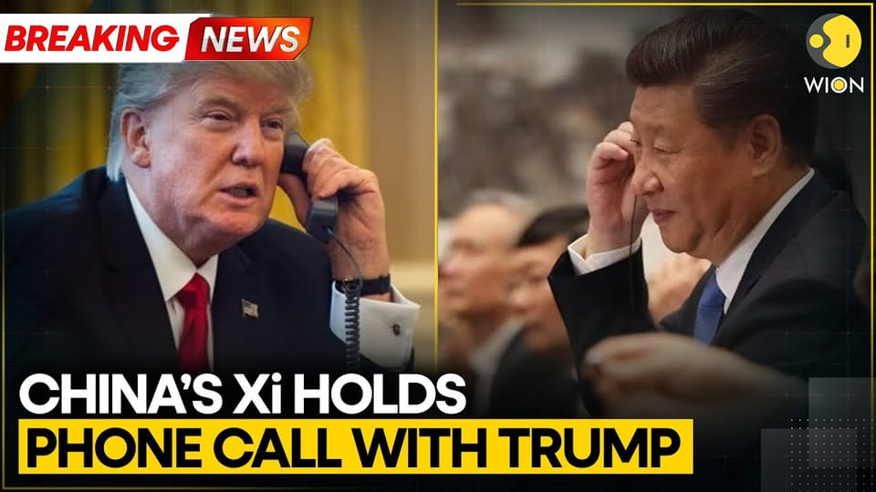

世界苦茶11月25日新闻 | 50条 | 习近平与川普电话商讨台湾问题

习近平与川普电话商讨台湾问题 | 川普与高市早苗电话讨论 | 日本拟在台湾附近部署导弹 | 中日航线取消量增56% | 习近平重申对马杜罗支持 | 中国经济学家高善文被 | 特朗普解散DOGE
苦茶数据
美元兑人民币：7.09（昨日7.10，前日7.10）
美元兑日元：156.82（昨日156.68，前日157.12）
上证指数：3880（昨日3843，前日3834)
标普500指数：6705（昨日6602，前日6538）
比特币：88048（昨日86714，前日87109）
布伦特原油：63.09（昨日62.54，前日62.52）
中国新闻
• 特朗普与中国领导人习近平通话，讨论贸易、台湾和乌克兰。
特朗普与中国最高领导人习近平通话，讨论贸易，台湾与乌克兰 特朗普与中国最高领导人习近平周一通了电话，这是两国围绕关税和技术出口限制进行的一系列外交与贸易交锋中的最新一次。在关于通话的Truth Social帖子中，特朗普写道：“我们讨论了包括乌克兰/俄罗斯，芬太尼，大豆及其他农产品等许多议题。我们为伟大的农民达成了一项良好且非常重要的协议——未来只会更好。我们与中国的关系非常牢固！” 中国官方通讯社发表声明称，两国应“保持势头，在平等，相互尊重，互利的基础上朝着正确方向继续前进，扩大合作清单，缩减问题清单，以推动更多积极进展，为中美合作创造新空间。
• 江苏省台办主任练月琴简历被撤。
江苏省台湾事务办公室主任练月琴的简历被官方撤下，她也从公众视野消失逾一个月。她去年曾以“情绪会冷静”评论中国大陆渔船金门翻覆案，遭到网民批评。星期一的搜索结果显示，江苏省台办官网的主任一栏目前已是空缺状态，不再显示练月琴的名字。（翻评：面对台湾问题，中国不需要冷静。）
• 日本拟在邻近台湾岛屿部署导弹 中国外交部指极其危险。
中日紧张局势持续升级，日本计划在与台湾邻近的岛屿部署导弹，中国外交部指“这一动向极其危险”。与此同时，解放军星期一在清朝北洋舰队诞生地刘公岛东部水域开展实弹射击。日本防长小泉进次郎星期天视察与那国岛基地，并说这个位于台湾以东约110公里的基地部署中程地对空导弹计划进展顺利。根据中国外交部官网消息，发言人毛宁星期一在例行记者会上，回应路透社提问时说：“日方在与中国台湾邻近的西南诸岛部署进攻性武器，刻意制造地区紧张，挑动军事对立。联系到日本首相高市早苗涉台错误言论，这一动向极其危险，须引起周边国家及国际社会高度警惕。
• 12条中日航线取消 取消量较上月增56%。
中日紧张关系带来的影响持续发酵，截至星期一上午10时，已有12条中日航线取消所有航班，目前至12月31日的中国至日本计划航班取消量较上月同期大增约56%。综合第一财经、共同社、路透社和《明报》报道，中国第三方出行平台“航班管家DAST”监测数据显示，未来一周赴日计划航班取消率将在星期四达到21.6%，为一个月以来最高。取消率靠前的航线出发地包括天津、南京、广州、上海以及无锡，目的地均为关西。日本首相高市早苗本月初发表“台湾有事”言论后，中日关系陷入危机。北京连续出台措施反击，包括提醒公民近期避免赴日旅游或留学。多家中国航空公司随后宣布涉日航线可免费退改签。
• 习近平承诺支持委内瑞拉总统尼古拉斯·马杜罗。
中国国家主席习近平重申对马杜罗的支持，批评美国在委内瑞拉的行动 中国国家主席呼吁尊重委内瑞拉主权，警告不要干涉外部势力，正值美国在该地区加强军事活动 里约热内卢报道——习近平在风雨飘摇的委内瑞拉总统尼古拉斯·马杜罗生日来临之际再度重申北京对马杜罗的坚定支持。他在一封贺信中表示，将在日益紧张的区域局势和美国的军事压力下继续支持该南美国家的主权。委内瑞拉外交部周末发布了这封信件。习近平在信中将中国与委内瑞拉形容为“亲密朋友、亲如兄弟、良好伙伴”，并承诺继续支持加拉加斯“维护主权和国家安全、维护国家尊严与社会稳定”。习近平还在信中谴责外部干涉委内瑞拉事务的做法。
• 在有关其访华传闻之际，斯塔默在南非G20峰会上会见了李强总理。
英国首相斯塔默在南非G20峰会上与中国李强总理会面，此前有传闻称他或将访华 有关他可能明年初访北京以及中国在伦敦的有争议大使馆将获批准的猜测不断。英国首相基尔·斯塔默上周在二十国集团峰会上与中国总理李强进行了交谈，外界此前曾有他可能在明年初访华的揣测。据了解，两位领导人只是短暂“擦肩而过”式地相互致意，并未举行正式的双边会谈；通常在此类情况下，斯塔默办公室会就讨论内容发布通报。上周被问及是否会访问中国时，斯塔默表示尚未确认访问计划，官员们也拒绝对在伦敦塔附近拟建的中国“巨型大使馆”的传闻发表评论。“我们的做法一如既往，即能合作时就合作，必要时就进行挑战，特别是在国家安全问题上。”
• 中国在迪拜航展以创纪录订单强化其在全球无人机领域的主导地位。
中国无人机制造商在迪拜航展斩获创纪录的1600份订单 一份报告显示，该国在全球无人机专利申请方面已占主导地位，制造商正迅速向海外扩张 据本地媒体SZnews.com报道，总部位于深圳的United Aircraft获得的这笔订单涉及在阿联酋及其他市场用于低空物流、医疗配送和农业应用的工业无人机。订单总金额未予披露。联合飞机集团国际业务负责人在公司上周的一份新闻稿中表示：“中东地区对高效且可靠的航空设备的需求持续上升。” 公司补充说，将“在扩展更广泛应用场景的同时，进一步加强与中东合作伙伴的合作”。报道称，联合飞机还与阿布扎比的一家按需配送平台建立了合作，其无人机将很快在当地提供食品配送服务。
• 闻泰科技表示，Nexperia总部对会谈的呼吁仍未回应。
荷兰总部对谈判呼吁保持沉默，英飞凌中国所有者闻泰科技表示 在一份声明中，闻泰重申其意图完全收回在这家芯片制造商的股东权利。闻泰科技是Nexperia在中国的所有者，称在就谈判事宜联系这家荷兰芯片制造商总部后未收到有实质意义的回复。“令人深感遗憾和困惑的是，尽管我们已尽最大诚意，Nexperia荷兰方面并未对我们提出的沟通方案作出任何实质性回应，”闻泰周日表示。该在上海上市的公司未披露其接触工作的具体细节，但敦促Nexperia总部拿出“以善意为前提的建设性解决方案”，以恢复闻泰对该芯片制造商的合法控制并完全恢复这家中国公司的股东权利。
印太新闻
• 国民党主席郑丽文拜谒两蒋父子 期许“国共进行和解”。
台湾在野的中国国民党主席郑丽文，星期一拜谒已故国民党总裁蒋介石及前主席蒋经国，期许国民党能扮演关键的历史角色，让台海远离战火。综合《联合报》与台湾中央广播电台报道，蒋介石和蒋经国的灵柩分别停放在桃园市慈湖宾馆和大溪头寮宾馆。星期一是国民党建党131周年，郑丽文率团前往慈湖及头寮谒陵，高举花圈向两蒋父子鞠躬致敬。郑丽文10月18日以“黑马”姿态当选国民党主席后，11月8日参加秋祭追思活动，因追思对象包括曾潜伏台湾的中国大陆间谍吴石，引发巨大争议，令其陷入蓝绿夹击的困境。她此次拜谒两蒋父子，让外界产生她希望以此缓和相关争议的联想。
• 台湾国民党寻求修改法律，允许大陆出生的配偶担任公职。
台湾国民党拟修法，允许大陆出生配偶担任公职 现行法律要求当选者须证明已放弃前国籍——但大陆出生者事实上无法取得相关证明。国民党提出修订《国籍法》与1992年《海峡两岸人民关系条例》。按修法内容，已在台湾居住并取得地方身份证的大陆出生配偶，不会仅因无法出示放弃大陆国籍的证明而被剥夺政治参与权——现实中这是不可能完成的程序。北京不签发相关文件，理由是将台湾视为中国一部分，认定岛上居民为其国民。此一推动在一宗高调个案后加速——花莲县一名大陆出生的村长邓婉华因未能出示放弃前国籍的证明，被内政部撤职。
• 台外交部：高市早苗答辩尚难直接解读为“日本将协防台湾”。
台湾外交部政务次长吴志中星期一指出，日本首相高市早苗在国会针对“存立危机事态”进行答辩，基本上仍遵循日本政府既定立场答询；只是就所谓“台湾有事”事态做出较明确陈述，似有意借此提高对中国大陆的吓阻，尚难直接解读为“日本将协防台湾”。台湾立法院外交及国防委员会星期一邀国家安全局副局长张元斌和吴志中，报告“日本首相高市早苗’台湾有事说’及‘安保三文件修正’对区域安全及台海稳定的情势研析”，吴志中作上述表示。会前，吴志中被媒体询及对高市早苗的发言，以及对日本防长小泉进次郎上星期天视察与那国岛的看法时表示，不便评论日本为维护国家安全的作为。
• 《联合国宪章》中的敌国条款还在适用吗。
2025年11月24日日本高市首相“台湾有事”说掀起的风浪尚未有平息的迹象，中国驻日使馆日前提出《联合国宪章》里的“敌国条款”，称赋予了二战战胜国打击法西斯的权利，日本则回应称该条款已过时。日本外务省上周日在社交平台X上回应数日前中国驻日本大使馆发布的有关《联合国宪章》中“敌国条款”的内容。日本外务省发文表示：“关于《联合国宪章》中所谓的’敌国条款’，1995年联合国大会以压倒性多数通过了一项决议，承认其已过时，中国也投了赞成票。
• 韩国作案最多的网络性犯罪者被判无期徒刑。
韩国有史以来最严重的网络性犯罪者被判无期徒刑 一名领导电报性犯罪团伙、促进数千份性虐待材料交换的头目在韩国被判处无期徒刑。33岁的金诺完是所谓“义警”组织的首脑——一个大规模、金字塔式的团体，胁迫受害者制作露骨内容并在在线聊天室传播。自2020年5月至2025年1月，义警至少剥削了261名个人——成为韩国历史上受害人数最多的网络性剥削案件。金以“牧师”为自封头衔，被查明实施了系统性犯罪，包括性侵未成年人和传播儿童性虐待影像。法院周一判决他组织运营犯罪集团、制作与传播性剥削及非法拍摄材料、强制使用非法拍摄材料，以及在受害者无法反抗情况下实施的“准强奸”或性侵等罪名成立并予以量刑。
• 东南亚暴雨引发洪水与山体滑坡，死亡人数攀升。
东南亚持续强降雨引发洪涝与山体滑坡 死亡人数上升 河内——周一，东南亚因强降雨引发的大范围洪涝与山体滑坡导致的死亡人数继续上升，越南又报告一人死亡，泰国则有五人遇难，数以万计民众被迫撤离。越南目前确认死亡人数为91人，另有11人失踪。自一周前开始的强降雨已在越南中部地区造成严重洪涝并触发山体滑坡，受灾范围从广治省至林同省，沿海中部及高地一带长达约800公里。达克拉克省受灾最严重，63人死亡，大多数因溺水身亡。其他遇难者来自庆和，林同，嘉莱，岘港，顺化和广治等省。由于多地道路被冲毁，直升机已被派出投放食物与救援物资，并协助撤离民众。
• 菲律宾总统表示，涉腐丑闻的7名嫌疑人已被拘押，其他涉案人员正在缉捕中。
菲律宾总统称涉贪丑闻的7名嫌疑人已被拘留，其余在缉捕中 马尼拉，菲律宾——菲律宾总统费迪南德·马科斯周一表示，当局已拘留七名嫌疑人，并正在缉捕更多人，此次大规模贪腐丑闻涉及防洪工程。马科斯试图平息公众对这些公然违规行为的愤怒，这些违规行为牵连到国会中有权势的人士。长期以来，这个多灾多难、贫困严重的东南亚国家因大规模贪腐而导致防洪工程质量低劣或根本不存在，致使其长期面临致命洪灾和极端天气之害。菲律宾曾有两任总统因被指掠夺和施政不当而在和平的民众起义中被推翻。首批十几名嫌疑人已被反贪专门法院桑迪甘巴延起诉。
• CPTPP与乌拉圭启动加入谈判，寻求扩大自贸区。
在澳大利亚墨尔本举行的全面与进步跨太平洋伙伴关系协定部长级会议11月21日决定与乌拉圭展开新的加入谈判。在保护主义抬头的情况下，具有维护和扩大自由贸易区的战略意义。本次会议认为正在申请加入的印度尼西亚、菲律宾、阿联酋符合标准，将在2026年的会议决定是否与3国启动加入谈判。还与正在进行加入谈判的哥斯大黎加就在2025年底之前报告进展、并尽早得出结论达成协定。主席国澳大利亚的贸易部长法瑞尔在会后的记者会上表示，「期待年底前有新成员加入」。
• 野田佳彦称中日对立源于高市的鲁莽言行。
日本在野党立宪民主党代表野田佳彦11月23日就高市早苗在国会就「台湾有事」作出的答辩导致中日关系恶化一事表示，首相应致力于改善关系。野田佳彦说：「怎么看都可以认为这是由首相的鲁莽言行引发的。不断说明其真实意图和日本的官方立场十分重要」。野田佳彦在鸟取县米子市接受记者采访时作出这一表态。高市早苗在南非举行的二十国集团峰会首日，并没有机会与中国国务院总理李强接触。
科技新闻
• 特朗普的新行政命令将大型科技公司、学术界与政府汇聚起来，共同开展人工智能研究。
白宫周一启动了一项新计划，允许能源部下属的国家实验室与科技公司和学术界合作，利用人工智能推进科学研究。根据通过行政命令创建的“创世纪使命”，能源部将开发一个新的人工智能平台，使用联邦科学数据来训练用于科学研究的AI模型和智能体。这凸显了唐纳德·特朗普总统在第二任期对人工智能的重视，此前他在7月提出了一揽子广泛的举措和政策建议，称为人工智能行动计划。能源部部长克里斯·赖特在周一与记者的通话中表示，创世纪使命旨在将科技和商业领域在人工智能方面的进展应用到健康，能源，制造业等领域的科学研究中。他还表示，该项目将降低消费者的能源价格。
• 特朗普正考虑对华销售英伟达高端芯片。
美国商务部长卢特尼克表示，总统特朗普正在考虑是否允许英伟达向中国销售先进AI芯片，并将对此事做出最终决定。卢特尼克在周一接受采访时指出，总统正在听取众多不同顾问的意见来决定潜在出口事宜，并强调特朗普最了解中国国家主席习近平。彭博社上周五曾报道，美国官员正在就英伟达能否向中国销售H200 AI芯片进行初步讨论。卢特尼克表示，这类决定正摆在特朗普的办公桌上。他将决定我们是否推进此事。与此同时，卢特尼克承认在推动经济扩张与保护国家安全之间存在紧张关系。卢特尼克说，黄仁勋有充分理由希望向中国销售芯片，并补充说还有许多其他人同意此事值得考虑。
经济新闻
• 瑞银对中国楼市持乐观的分析师撤回看涨言论，预计将出现更深的下滑。
瑞银对中国楼市乐观预期退缩，预计将出现更深跌幅 瑞银分析师林剑锋表示，中国大陆房价预计至少还将下跌两年，原因之一是随着房价走低，越来越多的人倾向于租房而非买房。他在本月早些时候的一份报告中写道：“过去十年买房的人可能都在亏损”，并补充称这“从根本上改变了对房价的预期”。就在几个月前，林剑锋还曾预测在一线城市带动下，房价最早可能在2026年初“转稳”。但这家瑞士银行近期对中国楼市的看法已趋于悲观。林剑锋以在2021年初下调中国恒大评级着称——当时距该国负债最多的开发商违约还有11个月；他去年也曾押注房地产板块回暖。
• 中国国投证券首席经济学家高善文离职 社媒账号曾被屏蔽。
中国国投产业研究院院长、国投证券首席经济学家高善文离职。他去年公开批评中国经济问题后，社交媒体账号便被屏蔽。综合《中国证券报》和《21世纪经济报道》，业内星期一确认了上述消息。中国证券业协会网站目前已查询不到高善文相关信息。公开资料显示，今年54岁的高善文毕业于北京大学，2003年进入光大证券研究所担任首席经济学家。2007年5月，高善文转入安信证券出任首席经济学家。2023年12月，安信证券更名为国投证券，他继续担任这一职位。去年12月，高善文新增“国投产业研究院院长”职衔。高善文去年12月在深圳的一个投资者会议上说，由于失业严重，中国年轻人的消费活力下降。
• 进驻海外的日企16%把中国视为最重要生产基地。
日本帝国征信公司11月20日发布了关于日本企业拓展海外业务的意识调查结果。在进驻海外的日本企业中，作为生产基地最重视中国大陆的比例为16.2％。与2019年的上次调查相比下降7.6个百分点。日本企业可能对中美之间的关税谈判以及地缘政治风险存在担忧。帝国征信于10月下旬以日本全国的企业为对象进行了此次调查。共得到1万427家企业的有效回答。通过设置生产基地或销售基地进驻海外的日本企业占比18.3％，较新冠疫情前下降6.4个百分点。从作为生产基地最重视的进驻地来看，排在中国大陆后面的是越南，泰国。
• 美国要求以数字领域的让步换取对欧盟钢铁关税的放宽。
欧盟敦促美国取消对钢铝征收的关税，已为华盛顿提出的一项旧要求打开了大门：放宽你们的数字规则，我们就会作出让步。周一，贸易专员马洛什·舍甫乔维奇与欧盟贸易部长们会面时，对华盛顿将涵盖高额钢铝关税的商品名单扩大表达了担忧；美方出席者包括商务部长霍华德·卢特尼克和贸易代表詹米森·格里尔。美国商务部在八月将含有钢铁和铝的400多种产品列入了50%的关税清单——欧盟认为这一清单范围之广违背了七月达成的框架贸易协议的精神。
• 青年难以施展：中国养老护理行业的就业机会被忽视。
随着人口老龄化带动护理经济蓬勃发展，新毕业生对低薪与行业陌生感到担忧 中国正快速进入老龄化社会，养老护理行业有望成为重要的就业来源。然而，年轻劳动力对这一领域的热情并不高。国家卫健委下属的中国人口与发展研究中心主任何丹表示，随着全国人口结构向老龄化转变，护理服务业—including老年人护理—预计将在未来几年创造数百万个就业岗位并成为拉动家庭消费的动力。尽管这对正面临就业压力的劳动力市场而言是个利好，但许多应届毕业生往往对从事该行业持犹豫态度。
• 法国总理将预算僵局归咎于党派之争和总统竞选者。
法国首相塞巴斯蒂安·勒科尔努周一将预算谈判陷入危险境地归咎于党派的愤世嫉俗和总统竞逐的野心，这是在议员以压倒性票数否决明年财政计划关键部分后他的首次公开表态。“每个人都想推动自己的议程、插上自己的意识形态旗帜，”勒科尔努说，他的这番话与上个月他意外辞职后的表态有明显相似之处。
• 巴特·德韦弗达成预算协议，比利时避免政府垮台。
比利时执政联盟于周一清晨达成预算协议，使首相巴特·德韦弗的政府免于倒台。这一由佛兰芒分离主义者德韦弗领导的中右翼政府，在经过数月分歧后达成一项多年期协议，到2029年填补92亿欧元的预算缺口。德韦弗在本月早些时候谈判似乎陷入僵局后曾设定圣诞节前的最后期限。
• 李强总理敦促德国在对华政策上保持“理性和务实”。
中国总理李强在周日会见德国总理弗里德里希·默克尔时，敦促德国坚持理性务实的对华政策，关注共同利益。李强在南非约翰内斯堡举行的二十国集团峰会间隙对默克尔说：“我们希望德方坚持理性、务实的对华政策，排除干扰和施压，聚焦共同利益，巩固合作基础。” 预计将于明年对华进行国事访问的默克尔此次会晤，标志着两国在修复双边关系方面又迈出一步。上个月，德国外长约翰·瓦德富尔因未能安排到足够会见而推迟对华访问，导致双边关系一度紧张。上周，财政部长拉尔斯·克林贝尔成为自今年年初柏林新联合政府上台以来首位访问中国的德国高官。双方在北京举行了财政对话。
• 「高市日元贬值」或令海外投资者远离日本市场。
「高市日元贬值」或令海外投资者远离日本市场 2025/11/24 日本市场的行情氛围从11月开始发生了显著变化。上周股市下跌、债券下跌和日元下跌这一「股债汇三杀」变得明显。从押注日本首相高市早苗的积极财政和货币宽松政策运作的「高市交易」来看，对其负面影响的警惕正在提高。上周日经平均指数下跌3%，日元兑美元汇率贬值2%，长期利率涨幅达到0.07%。与10月末相比，日经平均指数下跌7%，日元贬值2%，长期利率上升幅度为0.12%，转为股债汇三杀。原因存在于日美双方。
• 日本牛肉重启对华出口的协商已停止。
尽管双方此前为实现24年来首次重启出口推进了各项手续，但后续协调工作变得困难。此事被认为是受中日关系恶化的影响。中国2001年因日本发生狂牛病而停止进口日本产牛肉。两国政府于2019年签署了作为重启日本产牛肉对华出口前提的检疫协议，并于2025年7月生效。当时已进入推动中国重启进口的最后阶段。日本政府高官透露，原定与中国进行的谈判已被取消。日本外务省高官表示，需与中国确认辐射测量方法等技术流程。
• 苹果公司罕见裁员、销售部门成重灾区。
苹果公司罕见采取裁员行动，裁撤了数十个销售岗位，以精简面向企业、学校和政府机构的销售渠道。据知情人士透露，苹果管理层在过去几周内已通知受影响的员工。此次裁员覆盖整个销售部门，其中一些团队受冲击尤为严重，但公司没有告知员工具体有多少岗位被裁撤。受影响的职位包括为大型企业、学校和政府机构服务的客户经理，以及负责运营 苹果简报中心的员工。这些中心通常用于机构客户会议并向潜在的大客户进行产品演示。苹果周一证实正在对该部门进行重组。“为了触及更多客户，我们正在对销售团队进行一些调整，这将影响到少量岗位。”
俄乌战争
• 媒体报道称，捷克一家公司被指控向乌克兰对无人机收取过高费用。
捷克媒体11月24日报道称，一家捷克公司被指以高额加价向乌克兰出售中国制造的无人机——有时高达原价近20倍——并因涉嫌逃税正接受调查。Radiozurnal援引知情人士报道，Reactive Drone公司在两年内以约3600万捷克克朗的价格购买无人机，却以约6.92亿克朗的价格卖给乌克兰军方。一位消息人士对Radiozurnal表示：“具体来说，在两年期间，购买了约3600万克朗的无人机，并以6.92亿克朗的价格卖给乌克兰军队。”此外，捷克国家打击有组织犯罪中心称，该公司将大部分利润——约6.38亿克朗，约合3000万美元——转入中国账户。
• 首席反贪检察官称，乌克兰有关机构否认正在对泽连斯基党团负责人准备指控。
乌克兰执法机构否认正在对泽连斯基党团负责人及反腐总检察官准备指控 11月24日，乌克兰执法机构否认正在对乌克兰首席反腐检察官奥列克桑德尔·克莱门科以及总统弗拉基米尔·泽连斯基党团负责人大卫·阿拉哈米亚准备指控。这一声明发布之际，有媒体报道总统办公厅据称准备对克莱门科和阿拉哈米亚进行报复，原因是二人在涉及国有核电垄断企业Energoatom的大规模腐败丑闻中的独立立场。总统办公厅、克莱门科和阿拉哈米亚均未回应置评请求。在泽连斯基任内最大的腐败调查——Energoatom案中，由克莱门科的专门反腐检察官办公室与国家反腐局已对八名嫌疑人提起指控。
• 金融时报：美国和乌克兰制定新的19点和平计划，但最重要的问题尚未决定。
据金融时报，乌克兰第一副外长谢尔盖·基斯利察说，美国和乌克兰起草了一份新的19点和平协议草案，但将政治上最敏感的部分留待两国总统决定。此前，华盛顿曾施压基辅接受一项由美俄官员制定的28点方案，方案触及多个乌克兰一直坚持的底线。基斯利察作为乌克兰代表团成员，参加了在日内瓦举行的高层谈判。他对《金融时报》表示，这次会议“紧张但富有成效”，最终形成了一份全面修订的草案文件，令双方“感到积极”。经过数小时艰难谈判，几乎在开始前就濒临破裂的情况下，美乌团队在多个问题上达成一致。但一些最具争议的问题——包括领土问题以及北约、俄罗斯和美国之间的关系，被“括号标注”，留给特朗普和泽连斯基决定。
• 俄罗斯抨击欧洲的和平计划——但却赞同特朗普关于乌克兰的提议。
克里姆林宫高级顾问嘲讽欧洲的结束乌克兰战争计划，称克里姆林宫更倾向于美国总统唐纳德·特朗普的原始提案。普京的资深外交助理尤里·乌沙科夫在莫斯科对记者表示，欧盟针对华盛顿提出的28点方案所推出的和平计划“根本不适合我们”。乌沙科夫补充说，特朗普的方案包含若干对俄重大让步——包括割让乌克兰大片领土并限制基辅军队规模——对克里姆林宫更为“可接受”。
• 马克龙即将提出一项志愿兵役计划。
巴黎——法国总统埃马纽埃尔·马克龙预计将在周四提出一项新的自愿参军计划——大多数政党很可能会支持该计划。该项目虽未恢复征兵制，旨在将受训人员输送到现役部队或预备役。近年来，政界有时提出服兵役以约束青年或促进社会凝聚力。如今，主要动机是加强军力，应对俄罗斯构成的威胁。随着有关俄罗斯领导人弗拉基米尔·普京可能在早至2028年对北约国家发动攻击的警告增多，许多其他欧洲国家也在考虑以不同形式恢复服兵役。
• 乌克兰战争最新消息：乌克兰部队在波克罗夫斯克方向开展行动，歼灭俄军并撤离伤员。
乌克兰战争最新：军方称俄军试图将乌军从哈尔科夫州奥斯基尔河东岸逼出 我是卡特琳娜·霍杜诺娃，从基辅报道，今天是俄对乌全面入侵的第1370天。今日要闻：乌克兰联合作战部通信负责人维克多·特列古博夫11月24日在国家电视台表示，俄军正试图将驻守在哈尔科夫州前线库皮扬斯克方向奥斯基尔河北岸的乌克兰军队逼出。特列古博夫称，库皮扬斯克及库皮扬斯克-伍兹洛维伊等定居点的态势未发生变化，但俄军正尝试在其东侧推进。特列古博夫说：“进展不算特别顺利，但那里确实承受着压力——是严肃的尝试。
• 德国总理：中国可以在乌克兰战争问题上加大施压。
德国总理：中国可以在乌克兰战争问题上加大施压 2025年11月24日德国总理梅尔茨在接受德国之声采访时，呼吁中国向俄罗斯施加更大压力，以结束乌克兰战争。他也反驳了认为欧洲在和平谈判中被忽视的说法。德国总理梅尔茨已与法国总统马克龙、英国首相斯塔默就实现乌克兰和平提出了欧洲的建议。在南非约翰内斯堡举行的二十国集团峰会期间，梅尔茨接受德国之声的采访时表示，在约翰内斯堡峰会召开前，他曾与美国总统特朗普就备受争议的乌克兰28点和平计划进行过电话交谈：“我告诉他，我们可以就某些要点达成一致，但其他点则不能同意。我还告诉他，我们与乌克兰站在一起。
• 欧洲官员对就美国提出的结束俄乌战争的提案进行的谈判取得进展表示欢迎。
官员称就修改美国对乌和平方案取得进展 官员周一表示，在周末就修改被许多人视为有利于俄罗斯的美国对乌和平提案进行的紧急会谈中取得了进展，但克里姆林宫称尚未看到这些修改。上周公布的华盛顿28点计划因在这场由俄罗斯入侵引发、近四年的战争中在很大程度上与莫斯科的诉求保持一致而引发警报。该计划敦促乌克兰将部分领土交给俄罗斯并削减军队，还寻求欧洲同意乌克兰永远不得加入北约军事联盟。参加在日内瓦举行的美乌官员会谈的乌克兰总统顾问奥列克桑德尔·别夫兹告诉美联社，他们几乎讨论了该计划的所有要点，唯一未解决的问题是领土问题，而这只能由国家元首层面决定。乌克兰及其盟友已排除了领土让步的可能性。别夫兹还表示。
• 据报道，泽连斯基本周可能访美，与特朗普就和平计划进行讨论。
编者按：本文已更新，加入了乌克兰驻华盛顿大使馆的声明。乌克兰驻华盛顿大使馆在11月24日告诉基辅独立报，目前还没有泽连斯基总统访问美国的计划，但也没有排除任何可能性。该声明是在美国媒体报道泽连斯基可能最早于本周访问美国，与其美国对应人唐纳德·特朗普讨论和平努力之后发布的。据报道，泽连斯基原计划与特朗普会面，讨论一项由美国支持的，因被指过度有利于俄罗斯而引发强烈反弹的和平方案中的敏感部分。原先的28点提案据称在11月23日于日内瓦的乌克兰与美国官员磋商后被删减至19点。由国务卿马可·卢比奥和乌克兰总统高级助理安德里·耶尔马克分别率领的美乌代表团对初步磋商称“富有成效”。
• 中国企业正借助西方制裁之机，大幅提高向俄罗斯出口军民两用产品的价格。
据金融时报，芬兰银行新兴经济研究所的一项最新研究，中国出口商在对俄罗斯军工行业的供应中大幅涨价，利用克里姆林宫对中国的依赖。在西方制裁限制进口的背景下，这种依赖被进一步放大。研究显示，从2021年到2024年，中国向俄罗斯出口受管制产品的平均价格上涨了87%。相比之下，类似商品出口到其他市场的价格仅上涨了9%。研究指出，尽管俄罗斯依赖中国供应商来绕过西方对军民两用产品的采购限制，但2022年全面入侵乌克兰后遭遇的制裁浪潮，显着推高了克里姆林宫的采购成本。一位西方高级制裁官员表示，他们当然希望俄罗斯军工体系能被切断供应链，但如果中国公司“宰他们”，那也是“不错的结果”。
世界新闻
• 最新皮尤调查显示：特朗普执政以来拉丁裔美国人悲观情绪飙升。
据Axios报道，皮尤研究中心的一项新调查发现，拉美裔对自己在美国的处境、对经济稳定，以及对特朗普第二任期政策的影响感到前所未有的悲观。这是皮尤近二十年来拉美裔调查中最悲观的评估之一，也印证了本月早些时候Axios与益普索的民调结果。这份最新调查显示，更加严重的悲观情绪和更强烈的恐惧正在出现。特朗普的第二任期政策，尤其在移民和经济问题正在重构拉美裔的归属感。报告提供了另一个视角，展示特朗普的第二任期政策，如何在中期选举前继续改变拉美裔的态度。根据Axios与Noticias Telemundo合作的拉美裔民调，近三分之二的拉美裔表示，现在在美国作为拉美裔或西语裔“不是好时光”。
• 欧洲议会推迟就冻结400万欧元极右翼资金的决定。
欧洲议会决定在欧盟检察官就该极右组织涉嫌资金管理不当的调查结案前，推迟决定是否要求其归还400万欧元。议会局——由议长罗伯塔·梅索拉和14位副议长组成——将于周一晚间形式上通过议会秘书长提出的建议，推迟结算现已解散的“身份与民主”党团的2024年账目，消息见POLITICO获悉的一份说明。议会管理部门发现，该党团在2019年至2024年间在公共采购及捐赠方面存在不规范行为，涉案金额达430万欧元。
• 针对前FBI局长和纽约检察长的诉讼被驳回，法官认定特朗普任命的检察官不合法。
据NBC报道，特朗普政府报复性法律战遭遇重挫，一名联邦法官驳回了对联邦调查局前局长詹姆斯·科米和纽约总检察长莱蒂蒂娅·詹姆斯的刑事指控，理由是提起这些案件的检察官并未得到合法任命。美国地方法官卡梅伦·柯里在裁决中写道：“我同意詹姆斯·科米的看法，司法部长试图任命林赛·霍利根为弗吉尼亚东区联邦检察官的行为无效。由于林赛·霍利根没有合法权限提出起诉，我将支持詹姆斯·科米的动议，驳回起诉书。” 她认定，由于林赛·霍利根的任命无效，她没有权限向大陪审团提出案件，因此起诉书应被撤销。林赛·霍利根此前是一名在佛罗里达执业的民事律师，担任过特朗普在多个案件中的法律代表，长期以来并无刑事检察经验。
• 五角大楼称在一段敦促部队违抗“非法命令”的视频出现后正在调查参议员马克·凯利。
五角大楼称正在调查参议员马克·凯利因视频敦促军人抗命“非法命令”的行为 华盛顿 — 五角大楼周一宣布，正在对亚利桑那州民主党参议员、前海军飞行员马克·凯利进行调查，原因是他与少数其他议员一起出现在一段视频中，呼吁军人抗命“非法命令”，可能违反军事法律。五角大楼在社交媒体上发布的声明援引了一项联邦法律，该法允许国防部长下令将退役军人召回现役，接受可能的军事审判或其他措施。对于五角大楼而言，直接威胁对在任国会议员展开调查是非同寻常的。
• 俄亥俄州州长迈克·德温签署了一项将体育博彩合法化的法律。
俄亥俄州州长迈克·德瓦恩签署了一项将体育博彩合法化的法律。但现在他说他反对这项法律 哥伦布——如果能回到过去，俄亥俄州州长迈克·德瓦恩说他不会签署那项在他州将体育博彩合法化的法律。在两名克里夫兰卫士队投手和一名出生于俄亥俄的迈阿密热火队后卫分别牵涉到与赌博相关的刑事调查后，这位连任第二届的共和党人表示，他现在“毫无疑问”后悔在2021年签字，将这个不受约束的新兴产业放开给俄亥俄人。
• 苏丹最高将领拒绝美国主导的停火提议，称其为“迄今为止最糟糕的一次”。
苏丹最高将领拒绝了由美国主导的调解方提出的一项停火建议，这对停止这场已持续超过30个月、给该非洲国家带来毁灭性影响的战争的努力来说是一个打击。军方周日晚间发布的视频评论中，阿卜杜勒-法塔赫·布尔汉将军表示，该提议不可接受，是“迄今为止最差的”，并指责调解方在结束战争的努力中“存在偏袒”。2023年4月，苏丹因军方与强大的准军事组织快速支援部队之间的权力斗争在首都喀土穆及全国其他地区爆发公开冲突，从而陷入混乱。根据联合国的数字，这场毁灭性战争已造成4万多人死亡。
• 教宗访土耳其之际，人们对伊斯坦布尔希腊东正教神学院重开抱有乐观态度。
随着利奥十四世教宗准备开启他的首次出国行程，访问土耳其以纪念塑造天主教与东正教基石的一项重大事件，人们对可能重开自1971年关闭的希腊东正教神学院的乐观情绪再度高涨。哈尔基神学院已成为东正教遗产的象征，并成为推动土耳其宗教自由的焦点。这所位于伊斯坦布尔近海赫叶贝利阿达岛的神学院，曾培养出几代希腊东正教宗主教及神职人员，其中包括全球约三亿东正教徒的精神领袖——普世牧首巴尔多禄茂一世。土耳其曾依据限制私立高等教育的法律关闭该校，尽管国际宗教领袖和人权倡导者多次呼吁，也在其后通过了允许私立大学蓬勃发展的法律修改。
• 美国拟将与马杜罗有关的“太阳勋章”犯罪集团列为恐怖组织。
美国将与马杜罗有关的“太阳勋章贩毒集团”列为恐怖组织，但它并非典型贩毒集团 加拉加斯——唐纳德·特朗普政府通过将“太阳勋章贩毒集团”指定为外国恐怖组织，加大了对委内瑞拉总统尼古拉斯·马杜罗的压力。但美国政府所称、由马杜罗领导的这一实体并非传统意义上的贩毒集团。周一在《联邦公报》公布的这一指定，是特朗普政府为打击向美输入毒品而不断升级行动的最新措施。大约一周前，美国国务卿马尔科·卢比奥在预告此举时指责“太阳勋章”对西半球的“恐怖暴力”负有责任。此举正值特朗普评估是否对委内瑞拉采取军事行动之际。尽管他曾提及与马杜罗进行对话的可能性，但并未排除动用武力。
• 特朗普的打击犯罪特别行动队在孟菲斯的数千次逮捕使拥挤的监狱和法院不堪重负。
由特朗普下令在孟菲斯打击犯罪的特遣队逮捕数千人，加剧了已拥挤的监狱和法院的压力 关注唐纳德·特朗普总统及其政府的最新动态 田纳西州孟菲斯——一支由唐纳德·特朗普总统下令在田纳西州孟菲斯打击犯罪的特遣队已逮捕数千人，这在忙碌的地方法院系统和本已人满为患的监狱造成了负担加重。相关官员表示，随着案件推进，这种压力将在数月甚至数年内持续。自九月底以来，隶属于“孟菲斯安全特遣队”的数百名联邦、州和地方执法人员在这座约61万人口的城市进行了交通拦截、执行逮捕令和抓捕逃犯。特遣队和孟菲斯警方提供的数据显示，已逮捕超过2800人，开出超过2.8万张交通罚单。
• 特朗普解散了马斯克的联邦成本削减团队。
特朗普政府已解散政府效率部(DOGE)，一个此前由马斯克领导且存在争议的联邦成本削减团队，尽管该部门任期还剩数月。这结束了马斯克及其同事历时数月旨在减少涉嫌欺诈与浪费、裁减联邦政府雇员的工作。政府效率部是根据特朗普总统于一月签署的行政命令创建的。该倡议预计将持续近两年。根据美国人事管理办公室主任斯科特·库珀的说法，截至11月初，政府效率部已不存在。库珀周日表示，政府效率部的原则仍然存在且蓬勃发展：去监管化；消除欺诈、浪费和滥用；重塑联邦劳动力；将效率放在首位。